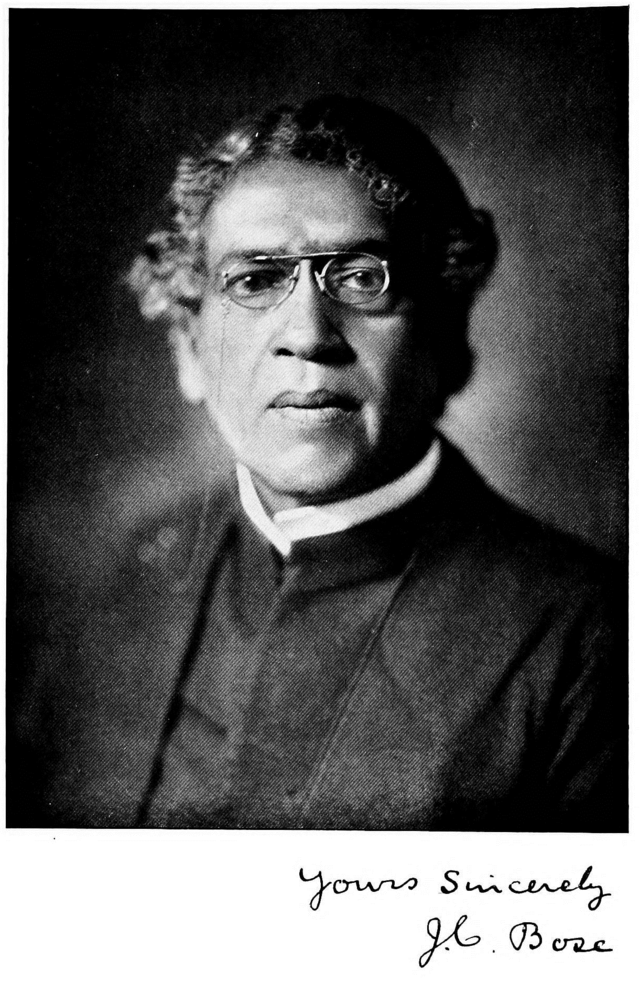

Jagadish Chandra Bose
(1857-1837)
"The true laboratory is the mind, where behind illusions we uncover the laws of truth."

Biography
Acharya Jagadish Chandra Bose is the glory of Bengal and also of India. Born in 1858, he dedicated his entire life is the persuasion of knowledge and science. He was born in Mymensingh in Faridpur in present Bangladesh. He received his education in Kolkata and studied in Hare school, and later in St. Xavier’s Institution. Bose came in contact with Father Lafont who actually inspired him to undertake modern science culture. He went to Britain to study physics, chemistry, and biology where his assimilation with many more young people enabled him in his researches.
Bose contributed mainly in the fields of physics and biology. After returning to Calcutta, he engaged completely in his researches. Between 1894 and 1900, he worked on the topics of optical properties of radio waves, and also experimented with refraction, diffraction, and polarisation.
Bose was phenomenal in designing coherers or radio wave detectors using semiconductors. The concept of radio was first conducted by him, although it is debatable if its real proposer was MG Macaroni. Prof. Bose also contributed to biology by inventing life in plants like human beings. Through electrical instruments, he realised the stimulus in plants due to which they responded to several circumstances. That plants can react to changing environments was for the first time introduced by Prof. Bose.